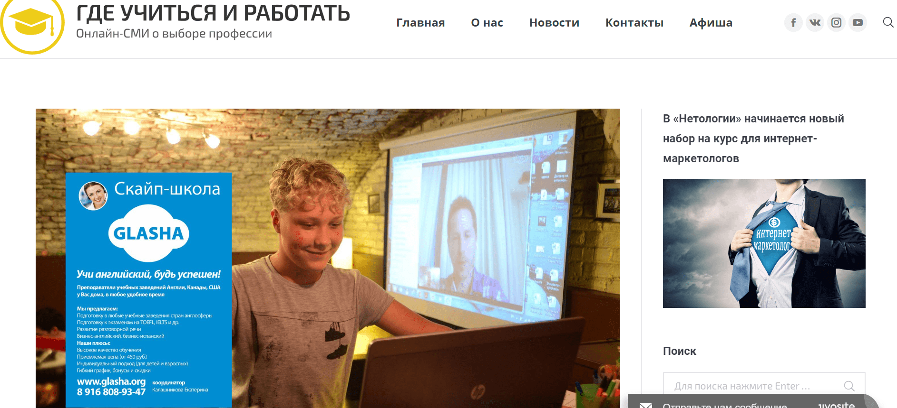

Кейсы и отзывы пользователей — как продвигать бизнес с помощью Pressfeed
Как мы привлекаем новых клиентов на рынке с огромной конкуренцией с помощью публикаций в СМИ: опыт онлайн-школы Glasha
Если вы руководите малым бизнесом, а на рынке становится все больше и больше конкурентов, постарайтесь «затмить» их в глазах целевой аудитории вашей экспертностью и начните привлекать новых клиентов с помощью грамотного продвижения в СМИ. Как делать это бесплатно, оперативно и без пиарщика в штате рассказывает Екатерина Калашникова, CEO скайп-школы иностранных языков Glasha.
Glasha ㅡ скайп-школа иностранных языков. Работает с 2012 года. Особенность школы в том, что уроки проводят только сертифицированные учителя-носители языка.
В основном в школе занимаются те, кто собирается переезжать за границу жить и работать. Также обучаем детей, которые готовятся поступать в зарубежные вузы. Бывают и интересные случаи: у нас учатся пенсионеры, дети которых уехали за океан, и их внуки уже плохо понимают по-русски, а бабушкам же хочется нормально общаться. Сейчас в в линейке проекта ㅡ 12 иностранных языков.
Проблема: огромная конкуренция на рынке онлайн-школ
Пожалуй, самая известная в России онлайн-школа иностранных языков ─ SkyEng. Еще на старте проекта в 2012 году создатели школы вложили в разработку сайта и подбор персонала около $13 тыс. А еще через пару лет инвесторы перевели в SkyEng более $300 тыс. (по данным «РБК» в 2015 году), сегодня компания продолжает закладывать на маркетинг и продвижение многомиллионные бюджеты.
Для сравнения: мы вложили в Glasha $10 тысяч суммарно за все время существования проекта. Конкурировать со SkyEng в рекламных digital-форматах (реклама в соцсетях, контекстная реклама) практически нет смысла: они любого задавят бюджетами. Кроме того, в последние 2 года стало модно открывать онлайн-школы ─ слышали о проекте «Акселератор онлайн-школ»? Кажется, что сейчас новые игроки на этом рынке появляются чуть ли не каждый день.
Теперь онлайн-школы на каждом углу и в каждом рекламном объявлении. Все хотят завлечь студентов, дать им скидку, выгодные условия. На рынке с такой конкуренцией становится особенно важно работать на репутацию, узнаваемость, экспертность. Хочется, чтобы студенты понимали, кому они платят деньги, почему экономить на изучении иностранного языка ─ это плохая идея, и в чем преимущества именно нашей школы.
При этом бюджеты на рекламу и продвижение у нас остаются минимальными, так что в 2018 году мы решили по максимуму задействовать бесплатные PR-инструменты. Один из самых эффективных способов заявить о себе и донести философию онлайн-школы Glasha до целевой аудитории ㅡ публикации в СМИ. Мы начали сотрудничать с крупными СМИ, публиковать комментарии и статьи о школе, рассказывать о нашем опыте и истории.
Цели продвижения в СМИ
В ситуации сумасшедшей конкуренции основная цель PR-продвижения и выходов в СМИ ㅡ сохранить стабильное количество студентов в школе. То есть кто-то уйдет в новые онлайн-школы, например, с более дешевыми услугами, но другие потенциальные клиенты, прочитав о нас в авторитетном издании и доверившись экспертизе Glasha, начнут заниматься именно у нас. Будем реалистами: без больших денежных вложений обогнать гигантов невозможно, но остаться на плаву, продолжать успешно работать, не потерять в доходах ㅡ вполне выполнимая цель.
Но хочется сразу отметить, что у нас нет отделов PR и маркетинга. Если какие-то рекламные задачи мы отдаем на аутсорс (например, запуск таргетированной рекламы и т. д.), то PR-продвижением занимается только собственник компании лично, то есть я (Екатерина Калашникова). Как вы понимаете, времени на написание текстов, на общение с журналистами у руководителя бизнеса нет и не будет: нужно решать множество других управленческих вопросов ежедневно. Откровенно говоря, я могу тратить на PR-активности максимум 2-3 часа в неделю. Поэтому мне необходим был инструмент, который смог бы автоматизировать все взаимодействия со СМИ, а мне не пришлось бы самой звонить/писать в редакции и предлагать темы для публикаций, как это делают классические пиарщики.
Таким инструментом оказался сервис журналистских запросов Pressfeed. Суть сервиса простая: журналисты из 4 тысяч изданий ищут здесь экспертов для публикаций. Сотрудники редакций оставляют вопросы по интересующим темам и собирают комментарии профильных специалистов. Все, что нужно делать компании, ㅡ оперативно и развернуто реагировать на актуальные запросы. Если вы действовали правильно ㅡ комментарий попадет в материал, а о вашей компании узнают читатели издания.
Я зарегистрировалась на Pressfeed в феврале 2018 года. В рамках базового аккаунта подключение к платформе полностью бесплатное (можно отвечать на 5 запросов в месяц). Я отвечаю на 2-3 запроса в течение месяца, в планах ㅡ чаще, но пока не получается. Если все-таки найму PR-специалиста, то логично будет подключить расширенный платный аккаунт, которые дает возможность отвечать на неограниченное количество запросов.
О чем говорим от лица компании: темы и примеры публикаций
В СМИ мы говорим обо всем, что связано с образованием, рассказываем о разных аспектах своей деятельности. Бывают узкие темы: как обучать детей-билингвов, с чего начать обучение, если студенту уже за 60 лет, что делать со сложными детьми. Часто рассуждаем о тенденциях в образовании, о плюсах и минусах дистанционного обучения, о новых онлайн-методиках изучения языков.
Совет: говорите обо всем, что знаете. Не бойтесь делиться опытом. У всех предпринимателей есть интересные истории из бизнеса.
Чтобы не пропустить ни один запрос, связанный с вашей отраслью или который просто кажется интересным, важно внимательно следить за потоком входящих запросов. Можно мониторить раздел «Запросы» на сайте, но проще ㅡ проверять рассылку, которая приходит на почту компании ежедневно в 10.00 и 15.00 по московскому времени.
Приведу примеры работы с Pressfeed из опыта компании Glasha. Сначала хочу вспомнить прямой эфир на радио MediaMetrics в передаче «3600 секунд». Дмитрий Главацкий, ведущий программы, опубликовал запрос:

Запрос от радио MediaMetrics
Я откликнулась, в ответе кратко рассказала об онлайн-школе, и меня пригласили стать участником программы. Прошел прекрасный эфир, я поделилась опытом создания бизнеса, объяснила плюсы общения с носителями языка. Почти часовой эфир послушали/посмотрели около 7000 человек.
Что произошло после эфира: в течение нескольких недель после выпуска количество заявок на обучение в Glasha возросло примерно в 2 раза. Обычно мы получаем 7-8 лидов в неделю, а тогда мы зафиксировали около 14 запросов.
Не все стали студентами, но часть из обратившихся решила учиться у нас. Плюс к нам поступило партнерское предложение о сотрудничестве от агентства, которое занимается зарубежным образованием.
Также было очень приятно познакомиться с Дмитрием Главацким, оказалось, что он работает главным маркетологом сайта Gismeteo. Дмитрий поделился контактами проверенного таргетолога и юриста, которые в дальнейшем помогли нам в развитии бизнеса. Получается, что работа на Pressfeed ㅡ это не только публикации в СМИ, это еще и полезные знакомства как журналистами, так и с экспертами из других областей.
Если говорить об интернет-изданиях, хочется вспомнить две публикации в «Деловом мире» (посещаемость ресурса ㅡ около 700 тысяч визитов в месяц). Первый материал мы сделали с помощью Pressfeed, а второй вышел всего на 2 дня позже, и там мы уже напрямую договорились с главным редактором издания Алексеем Петруниным.
Помните, как премьер-министр Медведев посоветовал всем учителям, кому не хватает зарплаты в школе, идти в предприниматели? Эта история как раз про меня. Я же была учителем биологии до того, как открыла онлайн-школу Glasha.

Запрос от «Делового мира»
Изданию я поведала историю создания своего бизнеса: с чего все началось, как я справлялась с трудностями, как я работаю, сколько у меня ассистентов, к чему это привело, какая у меня зарплата сейчас.
Материал с участием компании
Статью прочитали более 44 тысяч человек! В день публикации трафик на сайт школы вырос в 2 раза. Мы получили десятки положительных отзывов, комментариев и несколько новых клиентов.

Рост трафика после выхода публикации (26 июля и 27 июля 2018 года)
Кстати, если в процессе создания публикации у вас возник срочный вопрос к журналисту, редактору издания или появились дополнения к материалу ㅡ можно написать журналисту во внутренний чат, дослать файлы или обсудить следующий совместный материал.
Пример страницы журналиста с чатом
Во второй раз у нас случился серьезный разговор с изданием о том, как я открывала бизнес в Канаде и почему быть предпринимателем в России ㅡ невероятно сложно.

Публикация в «Деловом мире»
Статья набрала около 2.5 тысяч просмотров, и уже после нее (возможно, оба материала вместе сработали) мы получили три предложения о корпоративном обучении в трех компаниях. Московская компания «Видэкс Сервис», питерская компания «Инфоэнерго» и немецкая компания Mangione Consulting UG теперь обучают своих сотрудников в скайп-школе Glasha по программе Business english.
Также через Pressfeed у нас получилось выйти на такие крупные бизнес-издания, на которые бы мы вряд ли вышли своими силами. Да я бы просто не стала «стучаться» к ним вне сервиса: кажется, в честь чего Forbes с ежемесячной аудиторией более 1,4 читателей будет писать о руководителе небольшой скайп-школы? Но редакция Forbes пользуется сервисом Pressfeed.
Запрос от Forbes.ru
Я ответила на запрос о том, как вовремя делегировать полномочия и избавиться от трудоголизма. Это мой реальный опыт: когда мы только запускали скайп-школу, я погрузилась в работу с головой и дошла до такого состояния, что была вынуждена обратиться к психотерапевту.

Статья в Forbes.ru
Такой формат публикаций, может быть, и не привлекает новых студентов, но определенно работает на повышение узнаваемости. Необязательно же писать только об образовании. Хотя это наша основная тема, и я стараюсь отвечать на все запросы, посвященные обучению и профориентации.
Запрос от издания «Где учиться и работать»
Статья в издании «Где учиться и работать» популяризовала идею онлайн-обучения для наших студентов. Честно раскрыла все плюсы и минусы формата.
Публикация с участием компании
В другой раз познакомилась с новой площадкой CITRA: там освещаются темы, связанные с цифровой трансформацией нашего мира.

Запрос от CITRA
Вышел материал, посвященный онлайн-сервисам для обучения детей.
Публикация с комментарием компании
Между тем, если вы нацелены отрабатывать только отраслевые запросы, удобнее всего подписаться на рассылку по ключевым словам. Введите нужные слова в поиске и сформируйте специальную подписку. Для примера возьму наши ключевики «онлайн-образование», «иностранный язык».

Подписка на запросы по ключевым словам
После выхода любой публикации в любом издании обязательно увеличивайте ее охват с помощью социальных сетей. Мы всегда размещаем ссылки на материалы в официальной группе школы в Фейсбуке, просим делать сотрудников, учеников репосты.
Вывод: влияние публикаций на бизнес
До определенного времени я не думала о публикациях в СМИ как об эффективном инструменте продвижения, но опыт нашей компании показывает обратное.
С февраля 2018 года я ответила на 21 запрос на сервисе Pressfeed, 10 комментариев было принято и опубликовано. По моему мнению, руководитель компании не имеет возможности уделять много времени PR-продвижению, и если у вас нет помощников, Pressfeed ㅡ это вообще единственный способ коммуницировать со СМИ регулярно и эффективно.
Выстреливают не все публикации, но те, что сработали, помогает оставаться бизнесу на плаву. Не стоит гнаться за количеством публикаций, думайте о качестве. Работают те тексты, где вы сможете убедительно и честно рассказать о себе потенциальным клиентам.
В 2018 году мы потеряли часть студентов, но потом с помощью грамотного пиара смогли привлечь 100 новых и удержать их уровнем профессионализма и сервиса. Более того, мы заключили договоры с несколькими корпоративными клиентами. Стабильное количество студентов на рынке онлайн-школ в текущих реалиях ㅡ это успех.
Сейчас в Glasha учится более 500 студентов и работает 75 преподавателей. В 2019 году будем продолжать сотрудничать со СМИ, и я надеюсь, что мода на бизнес с онлайн-школами пройдет. Эти новые предприниматели наконец-то поймут, что не просто так заставить школу успешно функционировать.